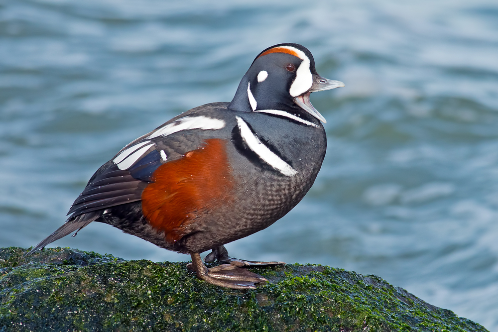

It is to its extraordinarily variegated plumage that the harlequin duck owes having inherited the name synonymous with a
very colorful character from Italian pantomime. Its size is modest. The body of the male is slate-blue,
enhanced with white and black markings. The white spots are located at the base of the beak, on the ear and the
side of the neck. On the other hand, a thin, incomplete white collar surrounds the neck. Another white line bordered with
black bars the chest. Its sides are brown in color. The lower part of the wings is brown as well as the
rump, legs and feet are grey-blue. The female harlequin is very different from the male. She wears
a dull brown coat and the sides of its head are adorned with three white spots. The belly is white, pockmarked with
light brown spots. Juveniles resemble female until fall but obtain full plumage
and final during the second year.
Size : 51 cm
Wingspan : 56 to 66 cm
Weight : 500 to 726 g
Order: Anseriformes
Family: Anatidae
Genre: Histrionicus
Species: histrionicus